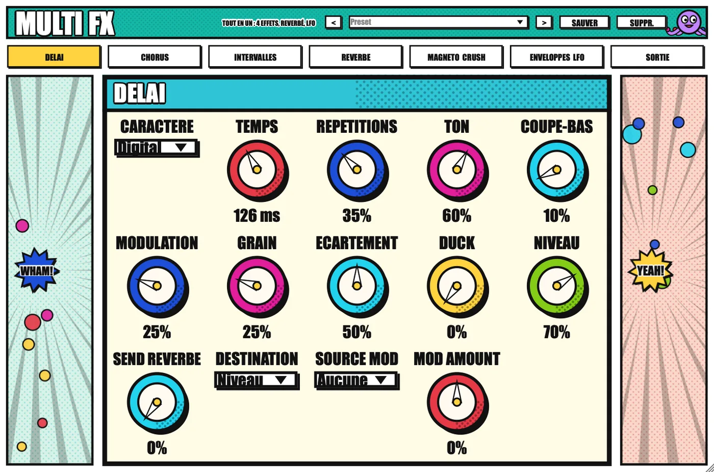

Multi FX
Six effets de studio dans un seul plug-in, que des enveloppes et des LFO font bouger : de quoi finir une voix, un sample ou un synthé.

Le son
Ce que ça change dans votre morceau
Multi FX réunit six effets : délai, délai d’intervalles, chorus, réverbe, bande magnétique et bitcrusher. Chacun se règle à part, et cinq enveloppes et cinq LFO peuvent animer n’importe quel réglage, pour des effets qui bougent avec le morceau.
Le délai a six caractères (numérique, bande, analogique, ping-pong, dual, inverse). Le délai d’intervalles fait monter ou descendre les échos de hauteur, jusqu’à l’octave au-dessus. La réverbe compte huit machines, dont un shimmer. Pensé pour les vocal throws, les sons de bande, le lo-fi et les nuages.
Inspiration. Les caractères Juno I, Juno II et Juno I+II du chorus sont dans l’esprit des chorus des synthétiseurs Roland Juno.
Trois points forts
Six effets, une fenêtre
Délai, intervalles, chorus, réverbe, bande, bitcrusher : on règle tout au même endroit.
Des échos qui montent
Le délai d’intervalles décale la hauteur des échos : une octave, une quinte, vers le haut ou le bas.
Tout bouge
Cinq enveloppes et cinq LFO assignables à n’importe quel réglage, avec tilt et limiteur en sortie.
Mode d’emploi
Comment l’utiliser
Activez les effets dont vous avez besoin et réglez leur niveau. Commencez par le délai (type, temps, répétitions), ajoutez le chorus pour la largeur, puis la réverbe pour l’espace. La bande et le bitcrusher salissent ou vieillissent le résultat.
Pour animer, choisissez une source (enveloppe ou LFO), une destination et une quantité : par exemple, un LFO lent sur les répétitions du délai.
Des idées pour démarrer
- Vocal throw : délai ping-pong, répétitions hautes, mix qui monte sur le dernier mot.
- Voix lo-fi : bande magnétique, bitcrusher léger, réverbe courte.
- Nappe qui monte : délai d’intervalles à +1 octave, réverbe shimmer.
- Sample qui respire : un LFO lent sur le niveau du chorus.
Les réglages
Ce que fait chaque réglage
- Délai
- Six types (numérique, bande, analogique, ping-pong, dual, inverse), avec temps, répétitions, ton, grain et duck.
- Intervalles
- Un second délai qui décale la hauteur des échos : +1 octave, +2 octaves, quinte, ou vers le bas.
- Chorus
- Six caractères (Juno I, II, I+II, Dimension, Ensemble, Detune) avec vitesse, profondeur et retard.
- Réverbe
- Huit machines, dont le shimmer Galaxie.
- Bande et bitcrusher
- Le vieillissement de la bande et la résolution numérique qui s’effondre.
- Enveloppes et LFO
- Cinq de chaque, assignables aux réglages des effets.
- Tilt / Drive / Ceiling
- L’équilibre graves-aigus, la saturation et le plafond de sortie.
- Brut / Effet
- Dose le son d’origine et le son traité.
Pour qui
Quand le sortir
Pour finir une voix, un sample ou un synthé avec un seul plug-in : lo-fi, trap, boom bap, ambiances.
Fiche technique
- Formats
- Audio Unit, VST3
- Système
- macOS, Apple Silicon et Intel
- Entrées / sorties
- Entrée et sortie stéréo
- Effets
- Six, avec enveloppes et LFO
- Mode
- Effet d’insert, entrée et sortie stéréo
- Inspiration
- Les caractères Juno I, Juno II et Juno I+II du chorus sont dans l’esprit des chorus des synthétiseurs Roland Juno.
Les noms de produits et marques cités appartiennent à leurs propriétaires respectifs ; ils sont utilisés uniquement pour décrire l’inspiration. BrickS n’est affilié à aucune de ces marques.